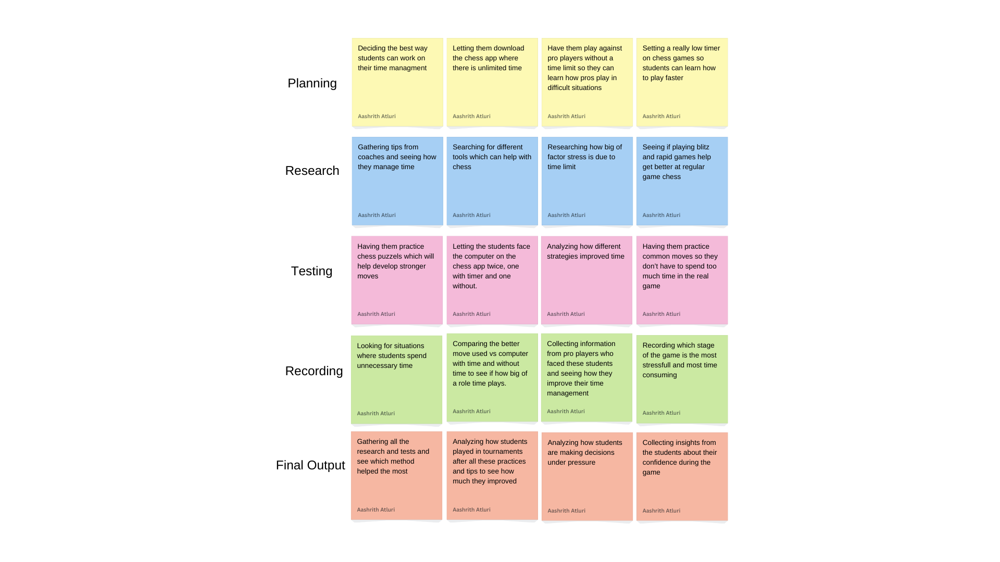

Problem Statement

In school chess tournaments, many players end up losing due to poor time management, frequently running out of time in important situations.
Affinity Diagram
Planning, research, testing, recording, and final output are the five categories in my affinity diagram, each with four solutions. I differentiated the methods using five categories, and I have a variety of testing strategies to support my problem statement.
Sketches

This image shows an app where you can get help with time managment, it tracks how much time you took on each move to help you get better at time managment in chess.
Prototype

In my prototype, the home page has options for 'Time Modes,' 'Game Types,' and 'Data Tracking.' When you tap on Time Modes, it shows choices like classic, slow, and fast. After you pick one, it shows different time limits for that mode. Finally, it displays your stats, showing what you're best and worst at.